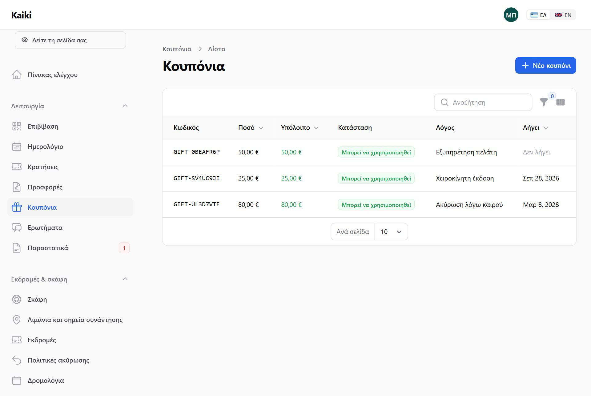
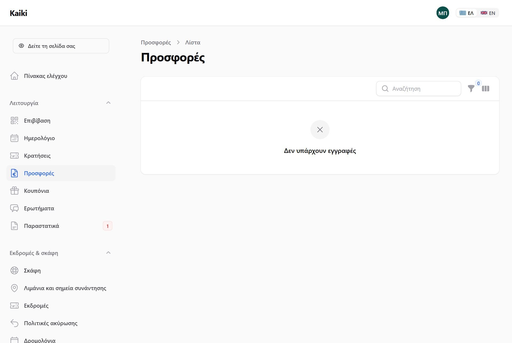
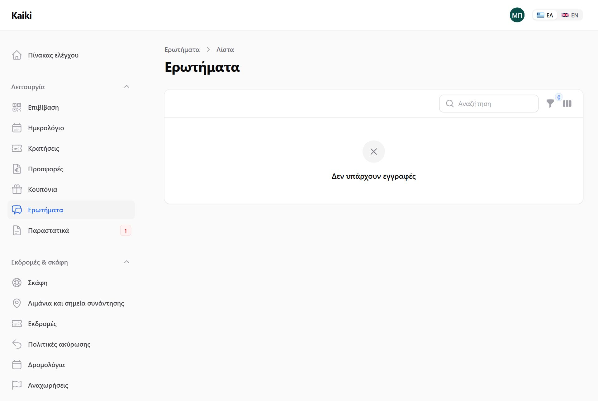
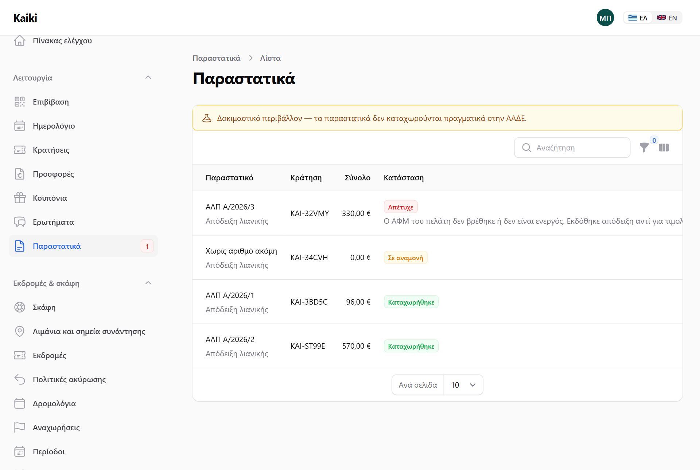
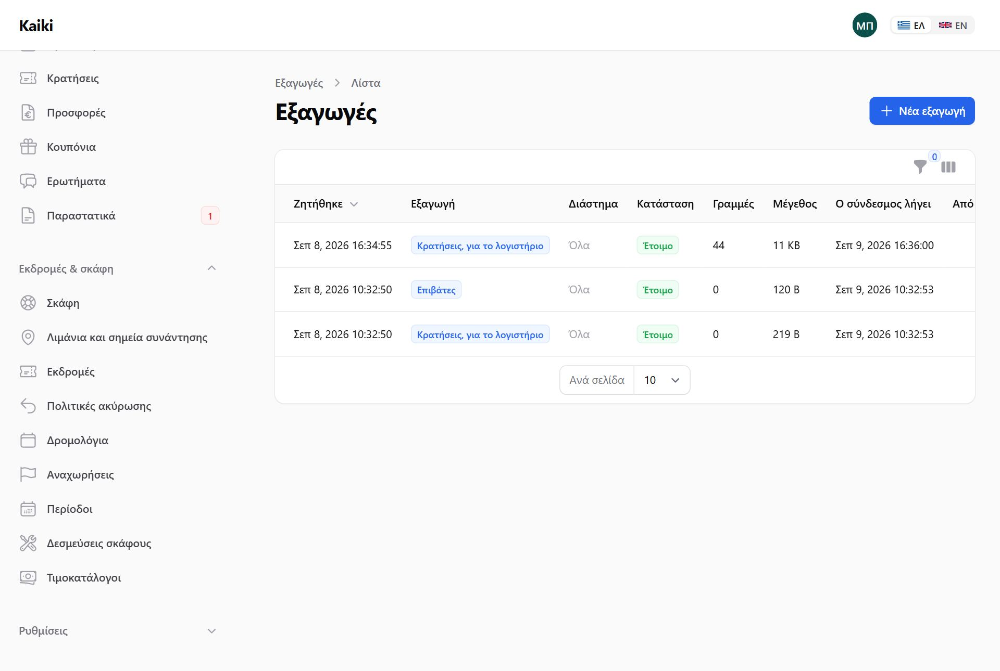

Πληρωμές, προκαταβολές, επιστροφές, κουπόνια, προσφορές — και τα δύο αρχεία που ζητά ο λογιστής.
Ο επισκέπτης πληρώνει με κάρτα μέσα από τη φόρμα κράτησης. Εσείς εισπράττετε μετρητά και καταθέσεις και τα δηλώνετε στον πίνακα. Και τα δύο καταλήγουν στην ίδια κράτηση και στο ίδιο νούμερο.
Αν ο τιμοκατάλογος ορίζει προκαταβολή, ο επισκέπτης πληρώνει αυτήν τη στιγμή της κράτησης. Το υπόλοιπο μένει ανοιχτό, φαίνεται στον πίνακα ελέγχου ως «Οφείλονται σε εσάς», και ο πελάτης μπορεί να το εξοφλήσει μόνος του από τη σελίδα της κράτησής του — ή εσείς να το σημειώσετε ως πληρωμένο σε μετρητά.
Στην καρτέλα της κράτησης, «Σήμανση ως πληρωμένη»: διαλέγετε μετρητά ή κατάθεση, και το ποσό. Χωρίς αυτό, μια κράτηση που πληρώθηκε στο ταμείο θα έμενε ανοιχτή για πάντα.
Όταν ακυρώνει ο πελάτης, η επιστροφή υπολογίζεται από την πολιτική που ίσχυε τη στιγμή της κράτησης — όχι από τη σημερινή. Η κράτηση κρατά δικό της αντίγραφο, οπότε μια αλλαγή πολιτικής τον Ιούλιο δεν αλλάζει τους όρους μιας κράτησης του Ιουνίου.
Όταν ακυρώνετε εσείς για καιρό, ισχύει το σκέλος «ακύρωση λόγω καιρού» της πολιτικής, ανεξάρτητα από την κλίμακα — και μπορεί να είναι κουπόνι αντί για χρήματα.

Τα κουπόνια εκδίδονται μόνα τους όταν ακυρώνετε αναχώρηση λόγω καιρού και η πολιτική λέει κουπόνι. Μπορείτε να δώσετε και ένα με το χέρι — για εξυπηρέτηση πελάτη, ή για οποιονδήποτε δικό σας λόγο.

Φτιάχνετε προσφορά, τη στέλνετε, και ο πελάτης την ανοίγει σε δική του σελίδα όπου μπορεί να την αποδεχτεί, να την απορρίψει ή να ζητήσει νέα. Η αποδοχή τη μετατρέπει σε κράτηση.


Η οθόνη υπάρχει και δουλεύει, αλλά δεν έχει συνδεθεί ακόμη με την ΑΑΔΕ: λείπουν τα δικά σας διαπιστευτήρια. Μέχρι να δοθούν, το Kaiki τρέχει σε δοκιμαστικό περιβάλλον — το λέει και η κίτρινη γραμμή στην κορυφή της οθόνης — και τίποτα δεν καταχωρείται πραγματικά. Ό,τι διαβάσετε παρακάτω περιγράφει τι κάνει το σύστημα· τι θα φτάσει στην εφορία εξαρτάται από ένα βήμα που δεν έχει γίνει.
Κάθε επιβεβαιωμένη κράτηση γίνεται παραστατικό. Το είδος δεν το διαλέγετε από μενού: προκύπτει από τα στοιχεία που έδωσε ο πελάτης. Αν έδωσε ΑΦΜ και επωνυμία, βγαίνει τιμολόγιο παροχής υπηρεσιών (ΤΠΥ)· αν όχι, απόδειξη λιανικής (ΑΛΠ). Ο ΑΦΜ ελέγχεται πριν γίνει τιμολόγιο, και ένας λανθασμένος ΑΦΜ δεν σταματάει την έκδοση — βγάζει απόδειξη και σας το γράφει στη γραμμή, όπως στην πρώτη σειρά της εικόνας.
Το Kaiki ξαναπροσπαθεί μόνο του, μέχρι οκτώ φορές μέσα σε ένα εικοσιτετράωρο, με αυξανόμενα διαστήματα — από μισό λεπτό μέχρι δώδεκα ώρες. Η ΑΑΔΕ δεν απαντάει πάντα, και μια αποτυχία στις τρεις το πρωί δεν είναι δουλειά κανενός.
Αυτόματα, λίγα λεπτά μετά την επιβεβαίωση — δεκαπέντε στην προεπιλογή. Το κενό δεν είναι τυχαίο: δίνει χρόνο στον πελάτη να συμπληρώσει τα φορολογικά του στοιχεία στη σελίδα της κράτησής του, ώστε να μη βγει απόδειξη σε κάποιον που ήθελε τιμολόγιο. Αν προτιμάτε να εκδίδετε εσείς, κλείνετε τον αυτόματο διακόπτη και εκδίδετε από τη λίστα με ένα κουμπί.
Μια επιστροφή τραβάει από μόνη της το πιστωτικό, συνδεδεμένο με το αρχικό παραστατικό και μέσα από την ίδια μηχανή επαναπροσπάθειας. Το αρχικό κλείνει όταν το πιστωτικό καταχωρηθεί και όχι νωρίτερα: ένα πιστωτικό που η ΑΑΔΕ απέρριψε δεν πρέπει να αφήνει την πώληση ακυρωμένη στα βιβλία σας ενώ το μητρώο την κρατάει ζωντανή.
Τρία πράγματα, και κανένα δεν είναι κώδικας. Τα διαπιστευτήρια της ΑΑΔΕ — δικός σας κωδικός χρήστη και subscription key· η πλατφόρμα δεν είναι ποτέ ο εκδότης. Οι συντελεστές ΦΠΑ — ο πίνακας υπάρχει, οι αριθμοί μέσα του θέλουν λογιστή. Και η πολιτική για τα κενά στην αρίθμηση, επίσης ερώτημα λογιστή.

Διαλέγετε διάστημα ημερομηνιών, το αρχείο ετοιμάζεται στο παρασκήνιο, και παίρνετε σύνδεσμο. Δύο πράγματα αξίζει να ξέρετε: